You can't see the two switches in the above photo but we will
get to them later. So, as I was saying, I went ahead and
configured the whole thing. Got subnets assigned both sides (so
routes added), enabled forwarding and then placed a machine on
either end and did a test ping, and not much to my surprise
it
worked! (As I had done this before). Now over the time I
would come to realize that I need to get other people on this
network to make it more interesting.
Now, I wanted to get more things and people onto CRXN really
badly - so I did what I knew best -
spam it everywhere!
I first did a test run of using Yggdrasil's Crypto-Key routing,
which let's you tunnel traffic from one node to another such
that it pops up on the tun0 interface on the destination node's
side - ready for accepting into the kernel's networking stack. I
did that between a machine of mine and a VM (the final time, as
I had done earlier tests but this was a working one - working
properly that is). I saw that that was working and then came the
first interesting part to the addition of new routes into the
inter-network, Chris's IPv6 NETMAPPING router.
Chris and I linked up and I
added a route on my side for 10.5.0.1/32 to point to his
Yggdrasil node so he could do NETMAP-NAT, which would mean he
could make the whole of CRXN available, through NAT, on the IPv6
Internet. This means any traffic coming in would be an IPv6
packet that then would strip it into payload and place in in an
IPv4 packet with the source IP of 10.5.0.1 and then the
destination IP that is a result of the mapping function of
getIPv4(IPv6In) - something that Chris defined his side. This is
a neat feature to have on the network as now we have every
device available and through the best type of NAT - one that
allows raw sockets, so instead of port-mapping we have address
mapping!
After getting the hang f Yggdrasil's CKR I started to get a lot
of people on the network by this method (and still have many
more who want to join it - so much so I should start thinking
about network structuring at this point). Another method I
should look to in the future is using CJDNS for this as well -
it too has a CKR feature which I can use for those who want to
get peered with CJDNS or for the same Yggdrasil peerings I have
to have a redundant backup! Another thing that would be nice
would be to see Lokinet introducing CKR at some point in time -
that would mean I would have 3 methods of tunneling available
that I could use for those who lack the other overlay networks
or to increase redundancy between existing links.
So now for a deep dive into what the network consists of my
side,
routers,
switches,
hosts and a lot
of
wires!
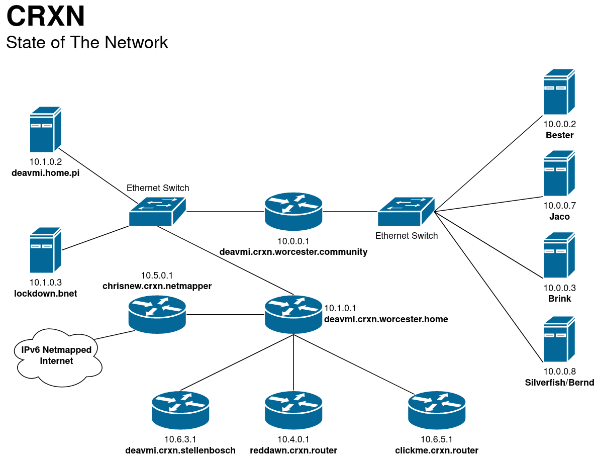
A network map of the whole known CRXN (omitting some
personal devices)
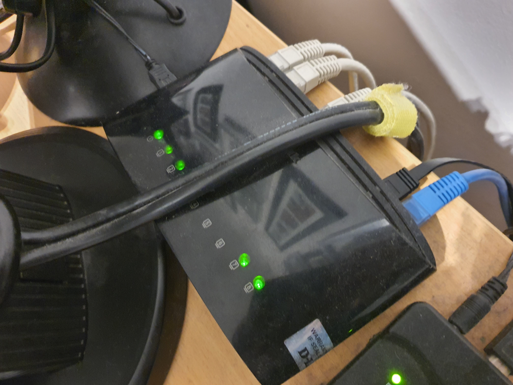
Home ethernet switch (where my network stuff begins - from my
room)
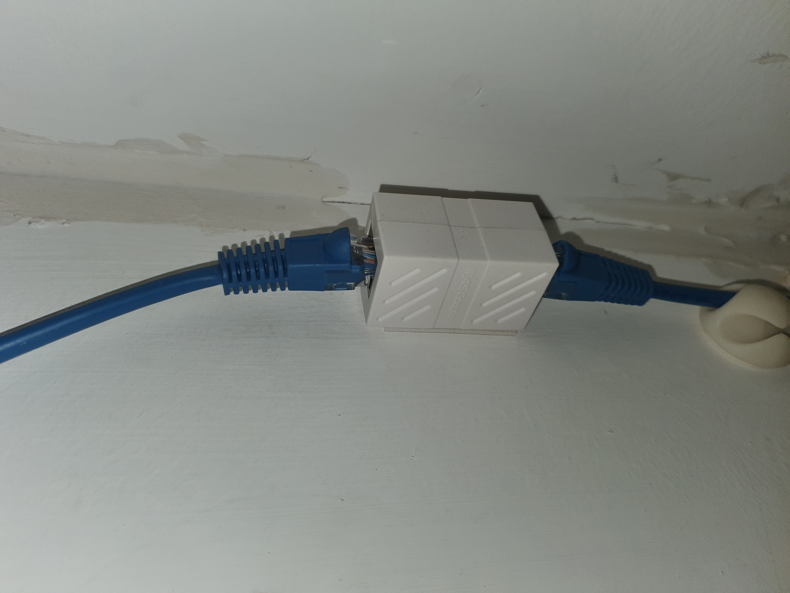
Ethernet coupler used to connect the lab's
ethernet switch to my room's ethernet switch (as the cable
isn't long enough)

The extension of the switch inside, this is just for more
ports on the same ethernet network - that's all
- but located in the garage rather so my machines can be
connected to it instead of all back to my
bedroom's switch which would be messy
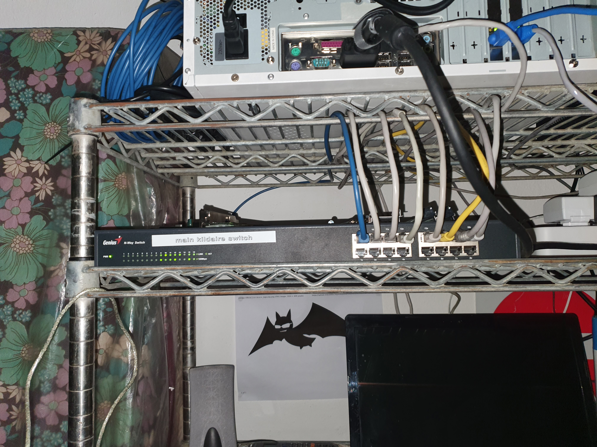
Another view of my ethernet switch (I actually got it for free
at a "dumpster dive" (computers being sold that were old))
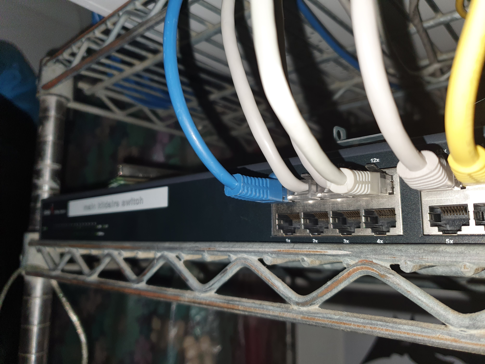
Haven't populated it all yet but you can see it's already
filling up a lot
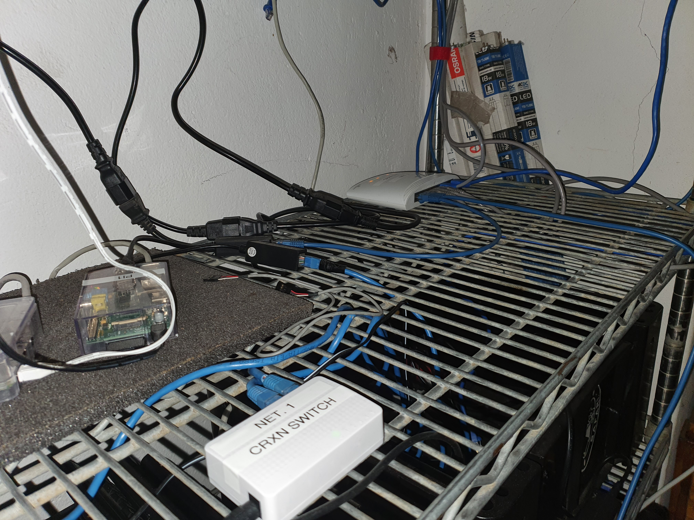
The other (the other one is the one above) two switches
mentioned in the network topology
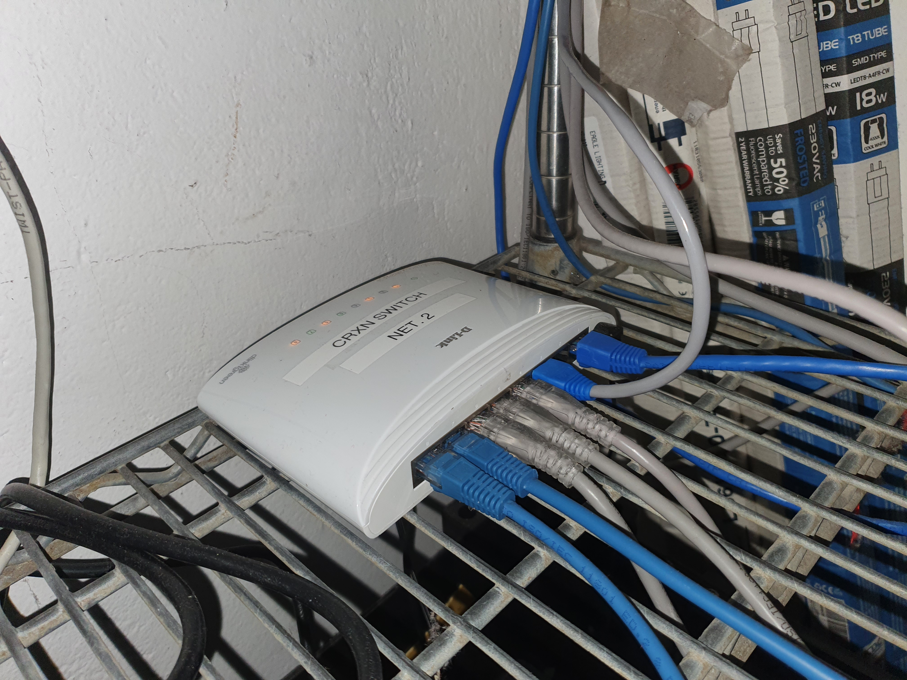
Ethernet switch 3

Ethernet switch 2
Now what am I running on CRXN? Well, the next machines you
will see,
silverfish (
bernd),
brink,
jaco and
bester are used for various
different things. Currently I run on the network services
for public consumption on
bester, this includes a
KiwiIRC instance for web irc access to BonoboNET, ssh-chat
(a shell server where the shell is a chat program), a few
matterbridge instances to bridge BonoboNET to what will be a
volatile IRC joining (on a few channels), a gitea instance
(which I use for git mirroring), a redmine instance (for
managing projects and media files for project notes and such
type of documents that aren't suitable for a repository).
Silverfish
or
bernd I use for software testing for
Butterfly and such with several docker containers,
jaco
- much of the same.
Brink, nice guy, but he ain't
doing much right now (I mean damn that thing has a strapped
on hard disk drive using cable ties - you don't get more
ghetto than that).
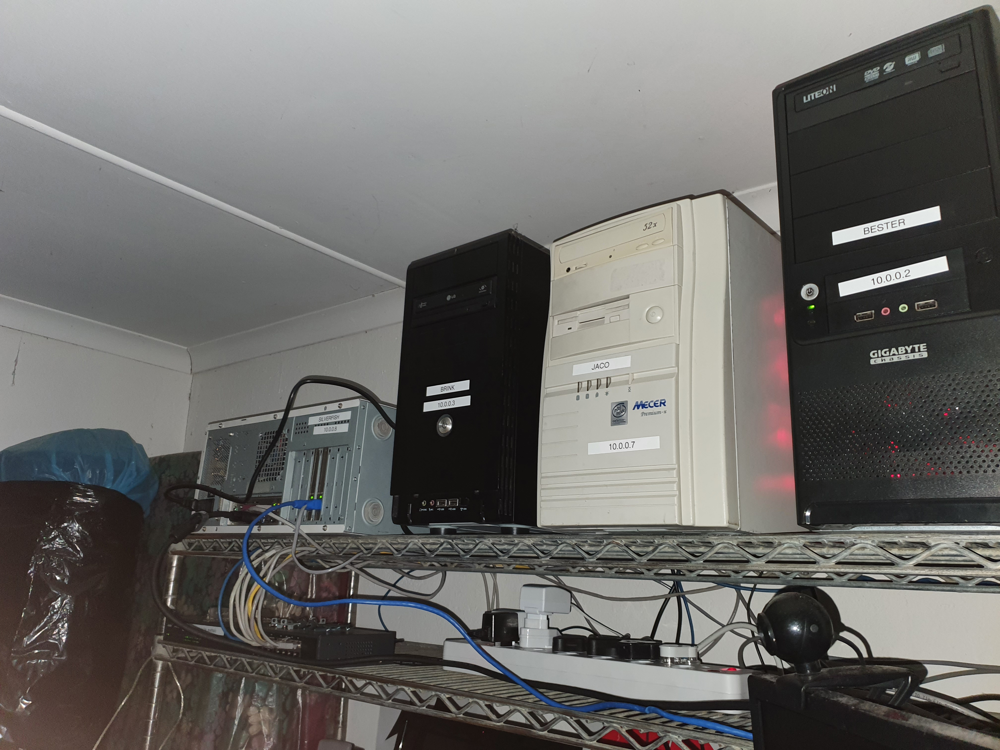
All of my machines, from left to right - Silverfish
(Bernd), Brink, Jaco, Bester
And a few more close ups whereby you can
see how well I have labeled everything.

Silverfish (Bernd) - I wanted more blinky lights on
the CRXN side so I added more ethernet but considering
the way ARP works, one is always useless
and only sends out periodic traffic - I might do some
batman stuff on it though - so no more CRXN for it!
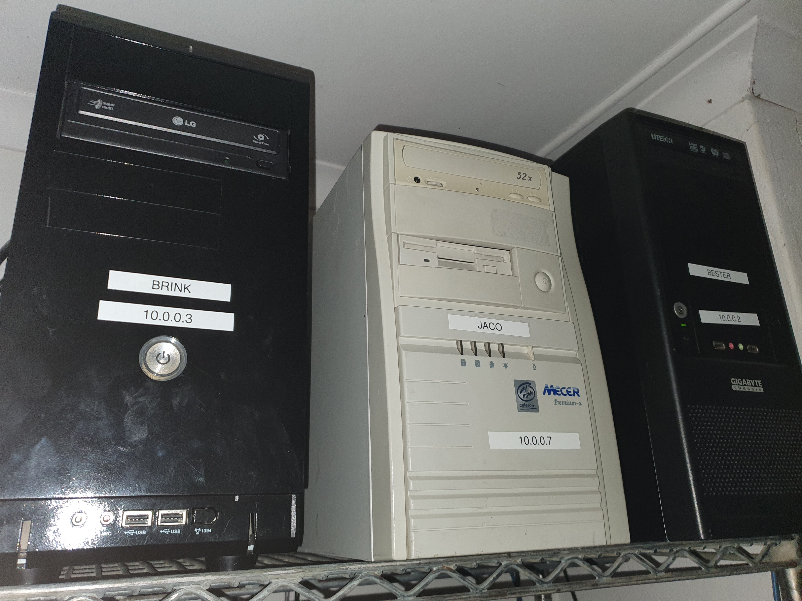
Brink, Jaco and Bester (sitting in a tree, well, umh a
shelf) - I like this scene very much, not what I just
described
but you know that one meme...

To power all of these beasts (albeit not at the same
time)
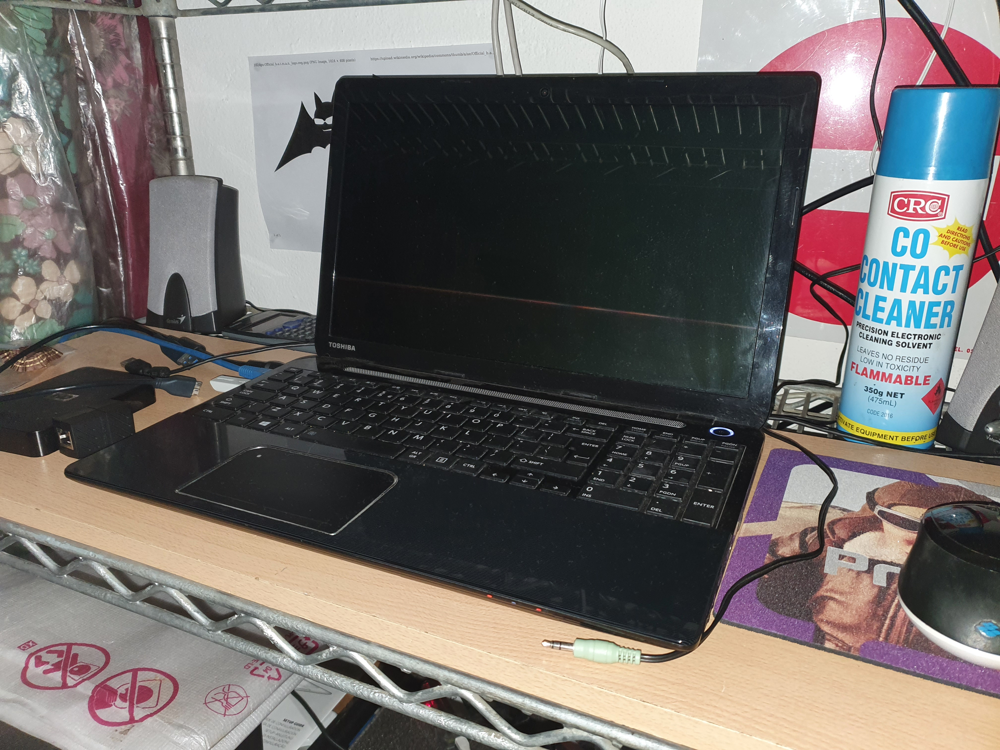
Laptop for managing the machines indirectly
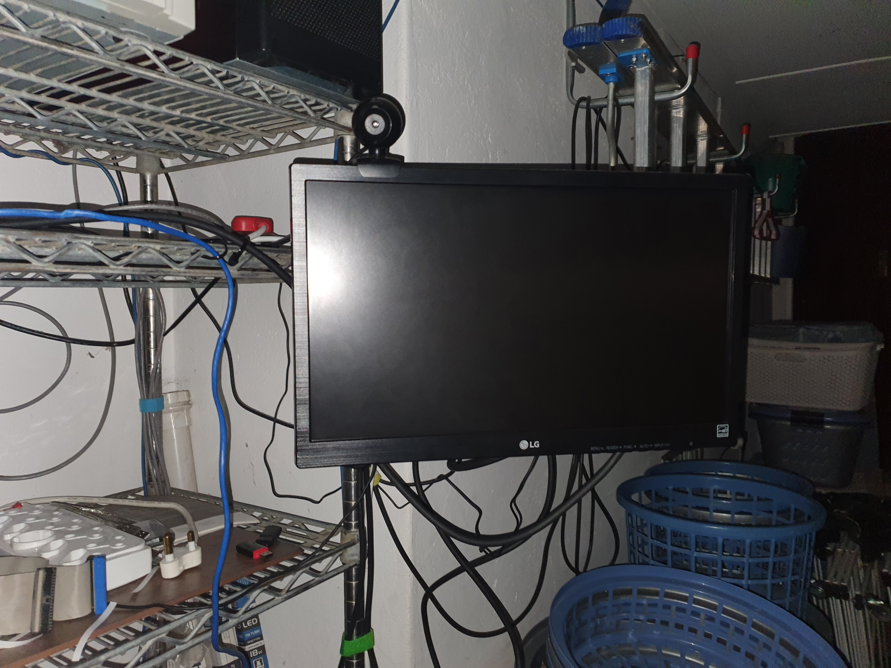
Monitor for direct attachment to machines
And that concludes CRXN stuffies! It also concludes
part 1 of this blog as I have written a lot and want
to relax now, so stay tuned for tomorrow evening
when I publish part 2!